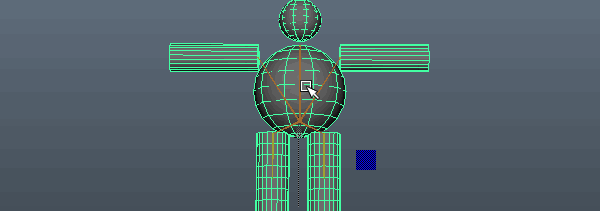
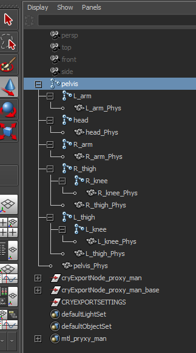
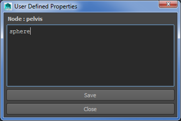
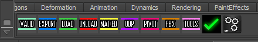
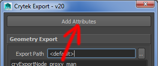
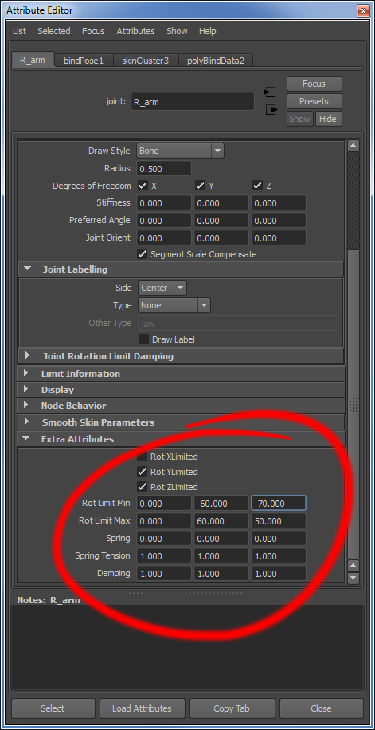
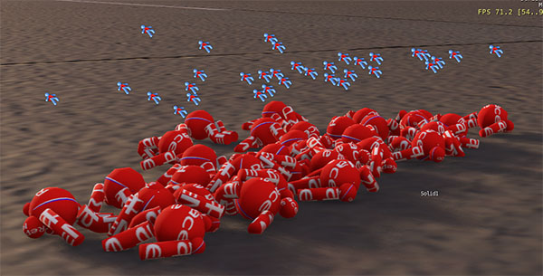

Overview
Sections
Before we begin, grab the Maya file here: proxy_man.zip This file is Y up, but Z up also works, though you must check 'export as Z up' in the exporter.

Physics Proxy Setup
Create proxies in Maya and snap them to the joints you want them to be attached to, it's easiest if their orientation matches the joint, then parent them under it.
The phys meshes need to be called '<joint_name>_Phys'.

If you're feeling adventurous, or would like to explicitly set the in engine proxy type, you can do so using the UDP button shown in the shelf below. This will allow you to set 'User Defined Properties' for your joint.

This adds a custom attribute with your UDP info on the joint. The flags you can set are as follows:
- nonphysical
- sphere
- box
- capsule
- cylinder
Joint Ragdoll Limit Attributes
Let's take a look at the Crytek Maya shelf:


If you click 'EXPORT', then select your joints that are parents of the phys geom and click 'Add Attributes', you will now see the following attributes stamped on them:

The Max value must always be larger than the min value.
Here's a pile of our ragdolls in the SDK build, place them as 'dead body' entities, then disable 'resting' and turn on simulation:
